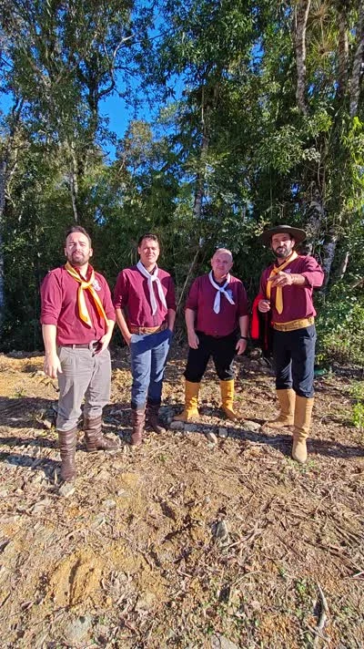

DA NOSSA TERRA. PARA TODOS OS PALCOS.
Tradição que
segue em frente.
NOSSA GENTE, NOSSA RAIZ
Cordiona Fandangueira
A música gaúcha ganha vida no encontro entre a banda e o salão.
Entre vaneiras, a voz e o som da gaita, a Cordiona Fandangueira leva a tradição adiante. De baile em baile. De coração em coração.
Da nossa terra, para todos os palcos.
Leve a Cordiona para seu evento →REGISTROS DA NOSSA ESTRADA
Do disco ao salão.
Pra Quem Gosta de Vaneira
O álbum reúne o repertório que dá nome ao nosso jeito de fazer baile, com Bugio Bagaceira, Bailezito em CTG e Chapéu do Gaúcho.
Ouça o álbum ↗Festa Gaúcha em São Paulo
A apresentação da Cordiona Fandangueira na edição de fevereiro da Festa Gaúcha de Itapecerica da Serra integra os registros oficiais do evento.
Registro do evento ↗Baile em Araucária
O Baile do Barziim, anunciado para 11 de setembro, leva a Cordiona à programação de bailes de Araucária, no Paraná.
Página do baile ↗
APERTE O PLAY
Pra Quem Gosta de Vaneira
Cordiona Fandangueira · Álbum · 2019
POR TRÁS DE CADA BAILE
Gente. Instrumento.
Palco.
Um encontro entre quem toca, quem canta e quem faz o salão dançar.
DESLIZE PARA EXPLORAR →
A força do conjunto.

Quem faz acontecer.
Conexão com o salão.
NOSSO DIÁRIO DE ESTRADA
Onde será o
próximo encontro?
O próximo baile
merece esse espaço.
O PRÓXIMO ENCONTRO
Seu evento.
Nossa música.
Uma noite de vaneira, amizade e salão cheio de vida.
BAILES · CTGs · FESTAS · EVENTOS